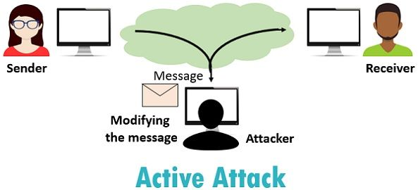

Securitatea informației se ocupă cu protejarea informației și sistemelor informatice de accesul neautorizat, folosirea, dezvăluirea, întreruperea, modificarea sau distrugerea lor
Acest este un exemplu de atac
Atacurile pasive au scopul de a intercepta şi monitoriza transmisiile, scopul fiind obţinerea informaţiilor care sunt transmise. Există două tipuri de atac pasiv: interceptarea mesajelor şi analiza traficului.
Atacurile active implică modificarea fluxului normal de informaţii şi chiar realizarea unor transmisii false